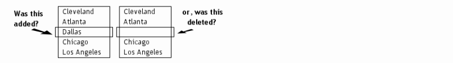

Une session de fusion vous aide à combiner des groupes séparés de modifications dans une nouvelle version des données, en prenant en compte ces deux ensembles.
Considérez premièrement une comparaison simple avec deux côtés, où un élément est d'un côté et pas de l'autre. Le logiciel ne peut pas vous dire si l'élément a été ajouté dernièrement d'un côté, où si son pendant a été supprimé de l'autre côté :

Toutefois, lorsqu'il y a une copie plus ancienne disponible des données, il y a plus d'informations sur lesquelles baser la décision de fusionner. Par exemple, pour décider si un élément doit être ajouté à un côté ou supprimé de l'autre, nous pouvons nous référer à une ancienne copie des données :

Dans cette situation, le programme peut vous aider à combiner rapidement et précisément des modifications indépendantes. Cela est appelé fusion 3-voies.
Toutefois, tous les changements ne peuvent pas être fusionnés sans risque sans une revue soigneuse. Si la même ligne a été modifiée indépendamment des deux côtés (et que les changements sont différents entre les côtés), la ligne sera marquée comme un conflit requérant une revue manuelle.